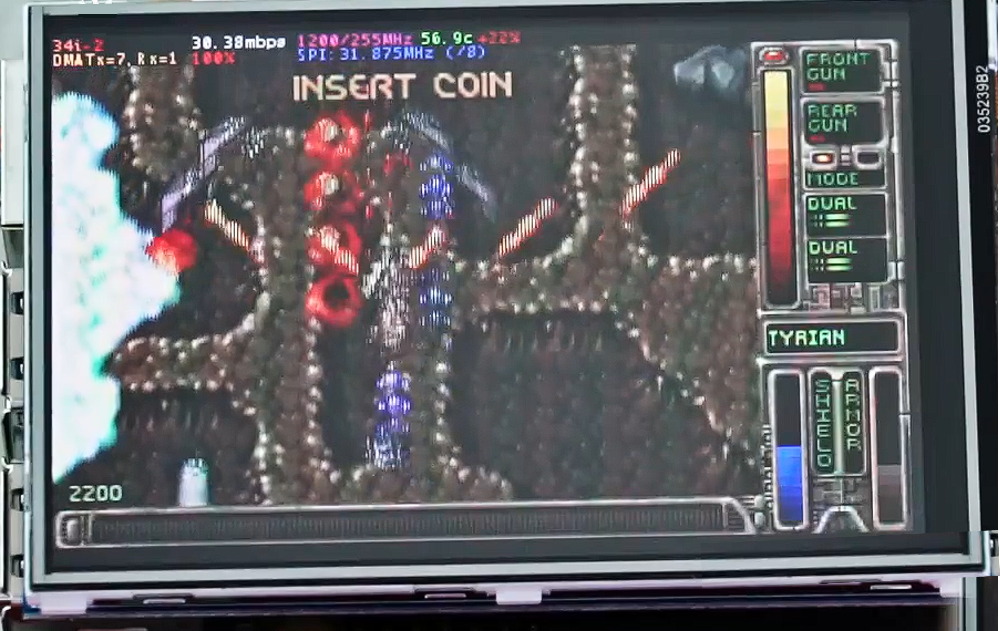
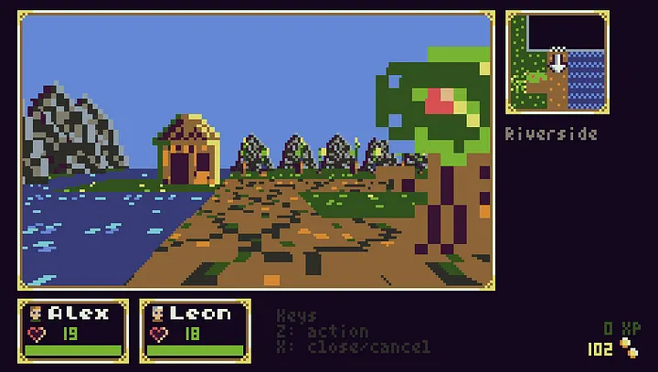
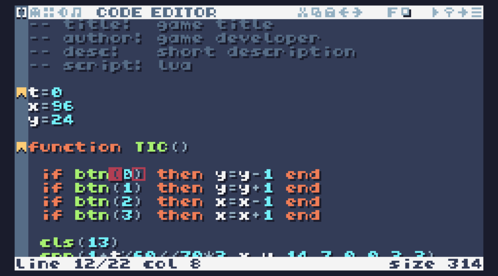
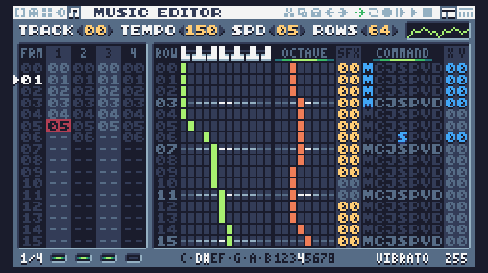

Prototype Hardware
Raspberry Pi Zero, 3.5″ ILI9486 Waveshare TFT, analog joystick, and four tactile buttons; all wired on a breadboard. The USB-to-TTL adapter on the left was used for serial console access during driver development.
TIC-80 Fantasy Console
The game runtime is TIC-80; an open-source fantasy console for making, playing and sharing tiny games. It renders to a 240×136 pixel framebuffer, 16-colour palette, at a fixed 60 Hz logic tick independent of the display refresh rate. Games are written in Lua, MoonScript, or JavaScript using the built-in editors. In this project, TIC-80 also serves as a lightweight frontend and application launcher: individual emulators and utilities are packaged as TIC-80 cartridges, and selecting a cartridge launches the corresponding application. While the underlying system continues to run on Raspberry Pi OS Lite, this approach avoids the complexity and resource overhead of a traditional desktop environment, providing a simple and consistent user experience.





Kernel Driver vs Userland Daemon
The ILI9486 can be driven two fundamentally different ways on a Raspberry Pi. The
kernel driver path (fbtft / notro) creates a second framebuffer /dev/fb1
and a userland fbcp process blits the entire frame from /dev/fb0 to it —
unconditionally, every frame, regardless of what changed. At 31.25 MHz SPI that full-frame blit
is a hard ceiling of ~12.7 FPS. No amount of clock tuning helps because the fundamental model
is always sending all 307 KB per frame.
The userland daemon path (fbcp-ili9341) has no kernel driver at all. The daemon captures the GPU compositor output via the DispmanX API, computes a pixel diff against the last transmitted frame, and writes only the changed regions directly to the BCM2835 SPI peripheral registers — bypassing the Linux SPI stack entirely. On typical retro game content, only 20–40% of pixels change per frame, which is enough to push well past the full-frame ceiling.
/dev/fb0
snapshot
diff
polled SPI
panel
Four Key Details
Getting fbcp-ili9341 working on this hardware required four specific decisions — each one non-obvious and consequential:
vc_dispmanx_display_open().
vc4-kms-v3d replaces the DispmanX subsystem with DRM/KMS — the call
fails silently, no output. Switching to
vc4-fkms-v3d ("fake KMS") leaves DispmanX intact. This was the single
fix that unblocked display output.
core_freq / CDIV = 250 / 8 = 31.25 MHz.
core_freq is locked in
config.txt to prevent dynamic scaling from drifting the divisor.
Configuration
# /boot/config.txt — key entries core_freq=250 # locked — CDIV=8 → 31.25 MHz SPI dtoverlay=vc4-fkms-v3d # fkms, NOT kms — keeps DispmanX alive hdmi_group=1 hdmi_mode=1 # 640×480 virtual framebuffer for GPU compositor gpu_mem=128 # removed: dtparam=spi=on # removed: dtoverlay=waveshare35b
Build & Install
# CMake — Waveshare 3.5B profile (pins DC=24, RST=25 preconfigured) cmake -DWAVESHARE35B_ILI9486=ON \ -DSPI_BUS_CLOCK_DIVISOR=8 \ -DARMV8A=ON \ -DSTATISTICS=1 .. make -j # Systemd service (auto-start on boot) sudo install -m 0644 -t /etc/systemd/system fbcp-ili9341.service sudo systemctl enable fbcp-ili9341 && sudo systemctl start fbcp-ili9341
How Diffing Breaks Through the Bandwidth Ceiling
The 31.25 MHz SPI bus imposes a hard ceiling: a full 480×320 RGB565 frame costs 307 KB, so unconditional full-frame delivery can never exceed ~12.7 FPS. This is why the kernel driver path stalls there regardless of tuning. fbcp-ili9341 breaks through it not by increasing the clock, but by only transmitting the pixels that changed:
| SPI clock | core_freq=250 / CDIV=8 | 31.25 MHz |
| Bus capacity | 31.25 MHz ÷ 8 bits/byte | 3.91 MB/s |
| Full frame | 480 × 320 × 2 bytes | 307,200 bytes |
| Full-frame ceiling | 3,910,000 ÷ 307,200 | ~12.7 FPS |
| δ = 35% (action game) | 3,910,000 ÷ (0.35 × 307,200) | ~36 FPS |
| δ < 1% (static / menu) | — | 60 FPS (vsync cap) |
Measured: 60 FPS static, 36 FPS OpenTyrian (fast-scrolling shooter).